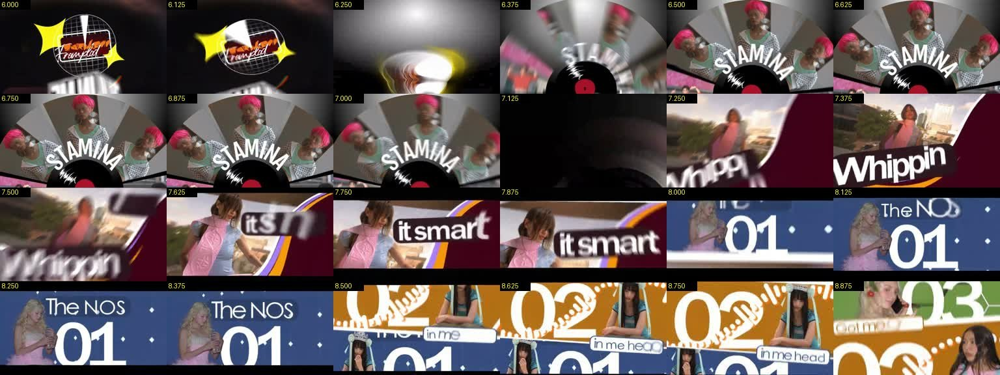
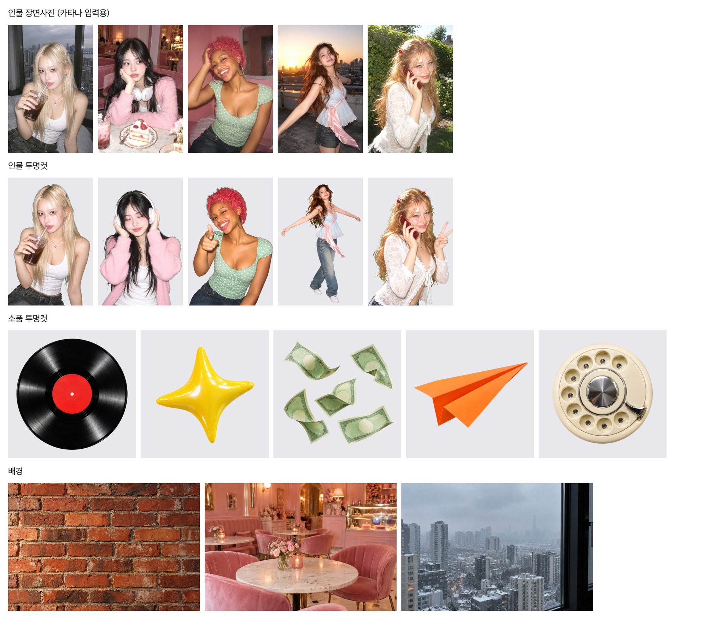
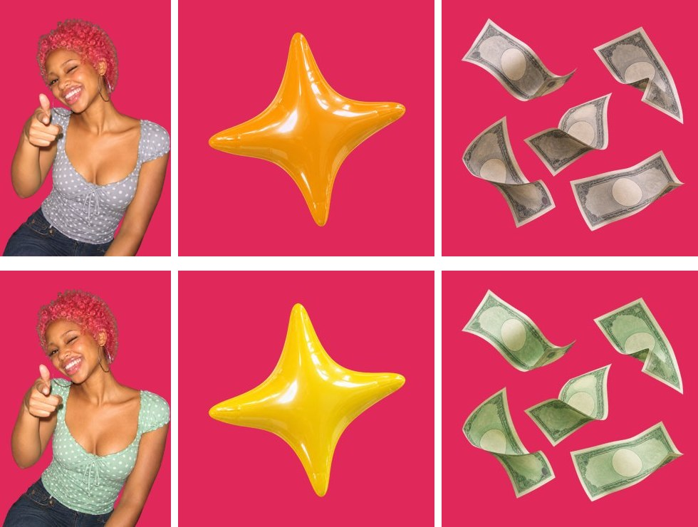
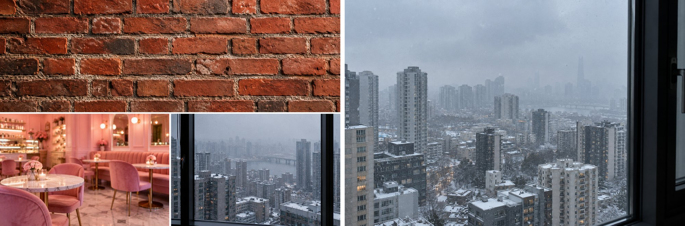
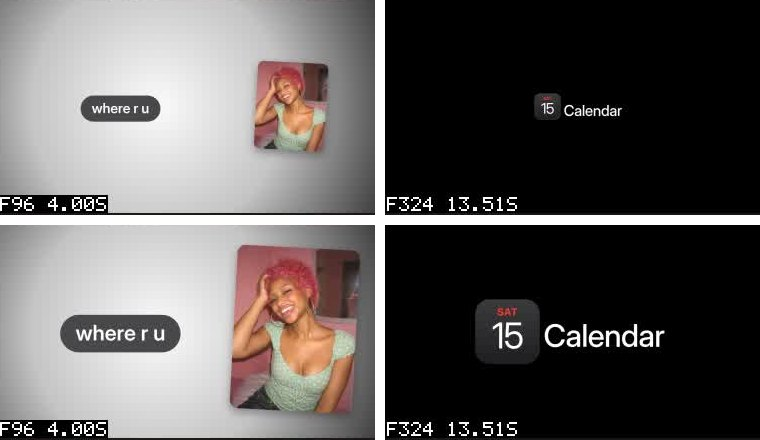
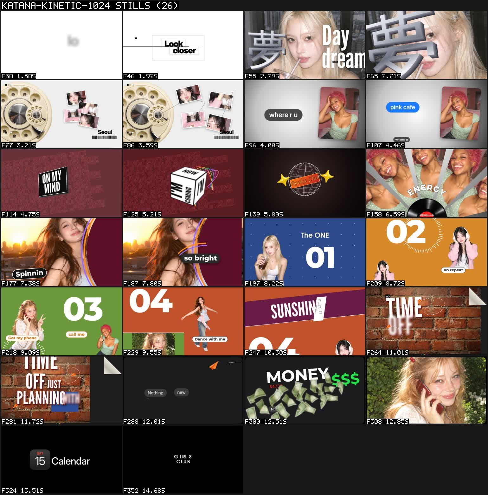
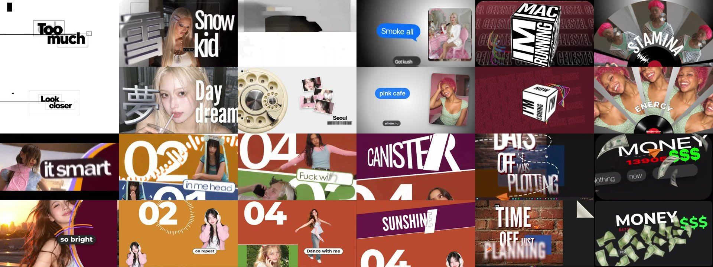
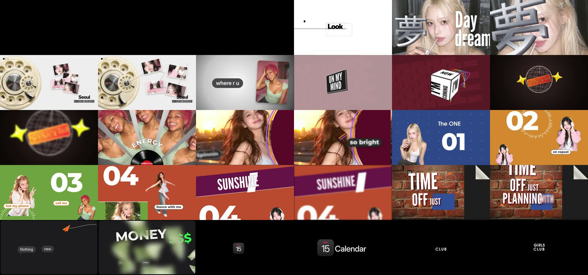

영상 생성 0번으로
18초 키네틱 영상 만들기
힉스필드 카타나 프리셋 영상을 레퍼런스로 삼아, 정지 그림 18장과 HTML 코드 한 장만으로 같은 구성의 영상을 만든 과정을 단계별로 정리했습니다.
먼저 결론
영상을 AI로 생성하지 않고, 사진은 그림으로 만들고 움직임은 코드가 한 프레임씩 그려서 영상으로 묶었습니다.
사진은 ChatGPT로 18장
인물 5명, 소품 5개, 배경 3장을 에고 브라우저의 ChatGPT로 그렸습니다. 힉스필드 이미지·영상 생성은 한 번도 쓰지 않았습니다.
코드가 432프레임을 그림
장면 19개를 HTML 한 장에 짜고, 힉스필드 작업 공간의 크롬이 프레임마다 화면을 찍어 영상으로 붙였습니다. 렌더는 88초 걸렸습니다.
사람이 직접 움직이진 않음
인물은 사진이라 몸짓이 없고, 화면과 글자만 움직입니다. 음악은 레퍼런스 원곡이라 공개하려면 곡을 바꿔야 합니다.
1. 숫자로 본 작업
든 비용은 힉스필드 크레딧 0이고, 사람 손이 간 일은 확인과 수정뿐이었습니다.
읽을 점
- 크레딧: 작업 전후 잔액 10, 거래 내역 0건으로 확인했습니다.
- 그림 시간: 한 장 중앙값 40초, 스페이스 3개로 동시에 돌려 약 18분 걸렸습니다.
- 코드 양: 페이지 한 장 401줄. 장면마다 시작·끝 시간과 움직임 함수가 들어 있습니다.
- 결과 파일: 1920×1080, 23.976fps, 8.7MB.
쓴 도구
- ChatGPT (에고 브라우저): 인물·소품·배경 그림
- 파이썬: 초록 배경 빼기, 프레임 시트, 비교 이미지
- 힉스필드 작업 공간: 카타나가 쓰는 원격 리눅스. 크롬·ffmpeg가 있고 쓰는 데 크레딧이 들지 않습니다.
- page_render.py: 카타나에 들어 있는 HTML 렌더 도구
2. 전체 흐름
레퍼런스를 0.125초 단위로 뜯어 본 다음, 장면마다 그림과 코드를 맞춰 넣는 6단계였습니다.
3. 레퍼런스 해부
18초 중 실제 그림은 1.25초부터 14.9초까지이고, 그 사이에 장면 19개가 평균 0.72초씩 지나갑니다.
장면별 길이 (초)
막대 위에 마우스를 올리면 시작 시점과 내용이 보입니다.
표로 보기
본 것
- 컷 박자: 대부분 0.875초. 숫자 패널 01~04만 0.375~0.5초로 빨라집니다.
- 소리: 음악이 0초부터 깔리고 화면은 1.25초에 시작, 14.9초에 끝나 3초 동안 검은 화면에 음악만 나옵니다.
- 룩: 플래시 디카 사진 + 좁고 굵은 글자 + 크롬 3D 한자 + 알약 라벨 + 얇은 선 박스.
- 전환: 컷마다 모션 블러, 휙 줌, 짧은 흔들림.
바꾼 것
- 글자: 화면 글자가 실제 노래 가사라 옮기지 않고, 같은 길이의 새 문구로 바꿨습니다(Look closer, Day dream, SUNSHINE 등).
- 말풍선: 마약을 말하던 문구를 "where r u", "pink cafe"로 바꿨습니다.
- 인물: 레퍼런스의 실제 인물 대신 새로 그린 가상 인물 5명을 넣었습니다.

4. 그림 에셋 18장
영상 대신 정지 사진만 필요했기 때문에, ChatGPT로 장면 사진과 오려낼 컷을 따로 만들었습니다.

얼굴을 맞춘 방법
- 순서: 장면 사진(C1_S)을 먼저 그리고, 그 사진을 ChatGPT에 첨부해 초록 배경 컷(C1_K)을 그렸습니다.
- 문구: "첨부한 사람과 같은 얼굴·머리·피부·옷"을 프롬프트 맨 앞에 넣었습니다.
- 룩 통일: 모든 사진에 "2000년대 초 디카, 정면 플래시, 약한 노이즈"를 같은 문장으로 붙였습니다.
그림 한 장에 걸린 시간 (초)
두 장만 11분 걸렸습니다. ChatGPT가 오래 붙잡고 있던 경우로 보이고(추정), 나머지는 29~62초였습니다.
5. 막혔던 곳과 고친 방법
다섯 번 막혔고, 모두 원인을 찾아 다시 했습니다. 다음 작업에 그대로 쓸 수 있게 남깁니다.
| 문제 | 원인 | 고친 방법 |
|---|---|---|
| 그림 9장 실패 | 다른 세션이 끝나면서 "쇼츠랩" 이름의 에고 스페이스를 한꺼번에 닫음 | 스페이스 이름을 "키네틱 그림"으로 바꿔 다시 그림 |
| 도시 배경이 콜라주 | ChatGPT가 앞 대화 그림까지 섞어 세 칸으로 그림 | "한 장으로 이어진 사진, 콜라주 아님" 문구를 넣어 다시 그림 |
| 배경 뺄 때 옷 색이 빠짐 | 초록 번짐 제거를 그림 전체에 걸어 민트 옷·노란 별·지폐까지 회색이 됨 | 투명한 곳에서 6픽셀 안쪽 경계에서만 지우는 스크립트로 바꿈 |
| 글자·카드가 작음 | 첫 정지 화면을 레퍼런스와 재 보니 말풍선·달력·MONEY가 절반 크기 | 레퍼런스 크기를 재서 30여 곳의 숫자를 고침 |
| GIRLS 글자 간격 | 글자 위치를 손으로 정해 G I R L S 간격이 들쭉날쭉 | 한 줄로 묶고 글자마다 떨어지는 움직임만 따로 줌 |



6. 코드로 영상을 만든 원리
영상 파일을 만드는 게 아니라, "t초일 때 화면이 어떻게 생겼나"를 계산하는 웹페이지를 만들고 그걸 432번 찍었습니다.
그림 없이 코드로만 그린 것
- 3D 글자: 夢, ON MY MIND, TIME 같은 글자는 같은 글자를 6~10겹 어긋나게 겹쳐 두께를 냈습니다.
- 3D 큐브: 웹의 3D 회전으로 면 4개를 붙여 돌렸습니다.
- 철망 지구본·점선 길·네온 낙서: 선 그림(SVG)으로 그리고 선이 그려지는 속도를 시간에 묶었습니다.
- 말풍선·달력 아이콘·바코드·숫자 패널: 모두 글자와 상자로 만들었습니다.
그림을 쓴 것
- 인물 사진: 장면 사진은 배경째, 투명컷은 숫자 패널에 올렸습니다.
- 소품: 레코드판, 노란 별, 지폐, 종이비행기, 다이얼 전화.
- 배경: 벽돌 벽 위에 조명과 가장자리 어둡게를 코드로 덧칠했습니다.
- 부채꼴 사진 조각: 사진 한 장을 다섯 조각 모양으로 잘라 펼쳤습니다.

7. 레퍼런스와 결과 비교
같은 시점 12곳을 나란히 놓으면 장면 순서, 배치, 컷 박자가 거의 그대로입니다.

| 항목 | 레퍼런스 | 우리 영상 |
|---|---|---|
| 길이·화면 | 18.02초, 1024×576 | 18.02초, 1920×1080 |
| 컷 시점 | 장면 19개 | 같은 시점 19개 |
| 인물 | 실제 인물 여러 명, 일부 영상 | 가상 인물 5명, 전부 정지 사진 |
| 글자 | 노래 가사 | 같은 길이의 새 문구 |
| 3D 글자 | 두께 있는 진짜 3D | 겹친 그림자로 낸 두께라 조금 얇음 |
| 음악 | 원곡 | 원곡 그대로 (공개 전 교체 필요) |

8. 다음에 다시 쓰려면
그대로 쓰면 되는 것
- 그림: gpt_image.sh 복사본(가로·세로·정사각 비율 지정, 인물 첨부 문구)과 prompts.json 형식.
- 배경 빼기: scripts/cutout.py. 초록 배경 #00B140으로 그리면 바로 투명 PNG가 나옵니다.
- 편집 틀: katana/index.html. 장면 함수만 바꾸면 다른 레퍼런스에도 씁니다.
- 다시 렌더: km_assets.zip과 index.html을 작업 공간에 올리고 page_render.py render 한 줄.
조심할 것
- 세션 1시간: 카타나 실행 세션은 만든 지 1시간 뒤 닫히니 시작하면 바로 끝까지 갑니다.
- 스페이스 이름: 작업마다 다른 이름을 써야 다른 세션이 닫지 않습니다.
- 가사·음악: 레퍼런스가 노래면 화면 글자는 새로 쓰고, 공개용은 곡도 바꿉니다.
- 사람 몸짓: 진짜 움직임이 필요하면 그 장면만 Grok 6초 클립을 넣는 방식이 있습니다(크레딧 아님, 이번엔 안 씀).
파일 위치
- 지침: 카타나_키네틱그래픽/추가지침_Instructions.md
- 에셋: 카타나_키네틱그래픽/에셋/ (입력용 5장, 투명컷, 소품, 배경)
- 코드: 카타나_키네틱그래픽/katana/index.html
- 기록: 카타나_키네틱그래픽/작업기록.md